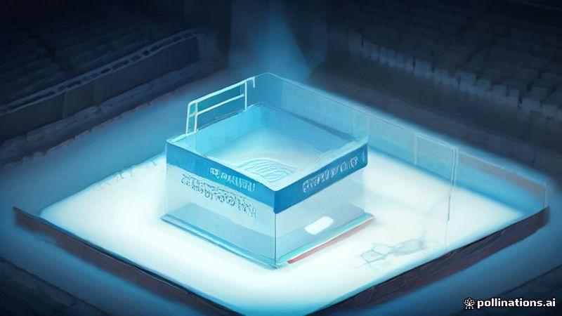

রাশিয়া কানাডা ও জার্মানির বিরুদ্ধে আইস হকি বাদের মামলা হুমকি
DW · 2026-11-13
AI-generated illustrationCAS-এর রাশিয়া পুনঃসংযোজনের আদেশের দুই সপ্তাহ পর, মস্কো কানাডা ও জার্মানির বিরুদ্ধে আইনি পদক্ষেপের সতর্কতা জানিয়েছে।
আন্তর্জাতিক আইস হকি ফেডারেশনকে রাশিয়া পুনরায় আন্তর্জাতিক প্রতিযোগিতায় অন্তর্ভুক্ত করার আদেশ দিয়েছিল কোর্ট অফ আরবিট্রেশন ফর স্পোর্টস। DW অনুযায়ী, দুই সপ্তাহের মধ্যে এই আদেশ কার্যকর করার কোনো স্পষ্ট পরিকল্পনা এখনো নির্ধারিত হয়নি।
মস্কো জানিয়েছে যে কানাডা ও জার্মানি, যেগুলি আসন্ন টুর্নামেন্টের আয়োজক, তাদের বিরুদ্ধে রাশিয়ান দলগুলোর বাদের বিষয়টি নিয়ে আইনি মামলা দায়ের করতে পারে। এই হুমকি হোস্ট দেশ ও রাশিয়ান ফেডারেশনের মধ্যে উত্তেজনা বাড়িয়ে তুলছে।
Read the original reporting at the links above.
English version
Russia threatens legal action against Canada and Germany over ice‑hockey exclusion
The Court of Arbitration for Sport ordered the International Ice Hockey Federation to readmit Russia to international competition. According to DW, two weeks later a concrete plan to implement the ruling has not been reached.
Moscow has warned that it may pursue legal proceedings against Canada and Germany, the countries hosting the upcoming tournaments, over the continued exclusion of Russian teams. The threat underscores the growing tension between the federation’s hosts and the Russian federation as they seek a resolution.